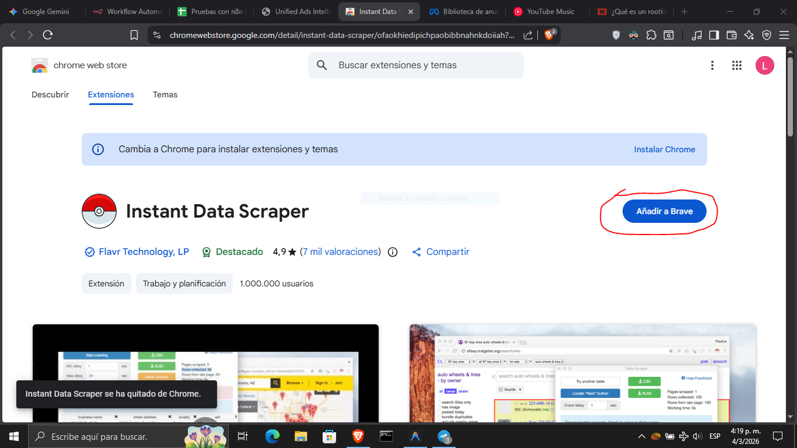
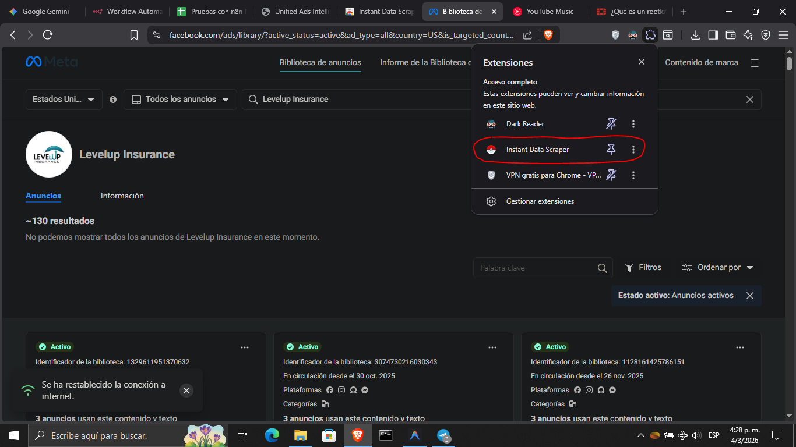
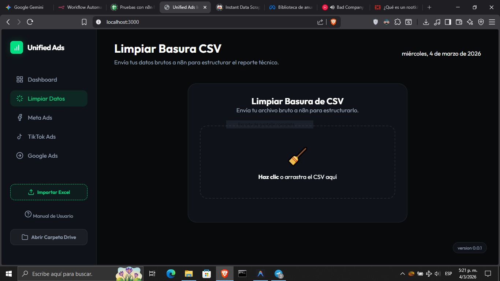
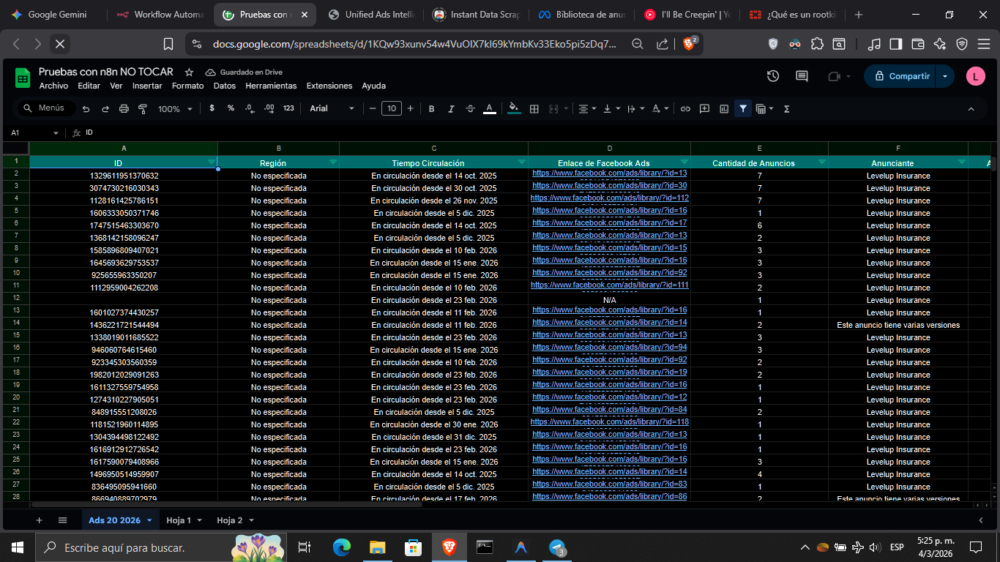

Intelligence Resumen
Análisis consolidado de patrones detectados en el scraping.
Ad Trust Promedio Detectado
0/100
version 0.0.3
Análisis consolidado de patrones detectados en el scraping.
Envía tu archivo bruto a n8n para estructurarlo.
Haz clic o arrastra el CSV aquí
Filtrado por: Longevidad > 21 días
Dado que Meta restringe el alcance exacto, usamos un Modelo Proxy:
Gestiona y descarga los materiales creativos detectados.
Sube un archivo Excel para ver los anuncios aquí.
Saca el reporte analizado de Google Drive y súbelo aquí para visualizar los insights de competencia.
Suelta tu archivo **.xlsx** o **.xls** aquí
Historial de cambios y próximas mejoras.
Se corrigieron pequeños bugs.
Se eliminaron secciones obsoletas (Google/TikTok).
Se añadió el Archivador de Medios (.zip).
Se integró el sistema de IDs únicos en SQLite.
Paso 1 de 5
Bienvenido. Para extraer los datos de la Biblioteca de Anuncios, necesitas instalar la siguiente extensión de Chrome obligatoriamente:
Descargar Instant Data Scraper
Ve a Meta Ads Library, realiza tu búsqueda y utiliza la extensión que acabas de instalar para generar tu archivo CSV en bruto.

Ve a la sección "Limpiar Datos" en este Dashboard y sube el archivo CSV que descargaste.
NUNCA envíes múltiples archivos ni intentes saltar la cola. Sube 1 ARCHIVO y espera pacientemente a que se procese.

Cuando el procesamiento acabe, el archivo limpio estará en tu Google Drive. Descárgalo y súbelo aquí usando "Importar Excel".
Abrir Google Drive
Transparencia: Esta herramienta ha sido diseñada exclusivamente con fines educativos y de análisis de marketing, sin fines de lucro.
Protección de Datos: El sistema solo procesa información que Meta Ads Library hace pública para fines de transparencia publicitaria. No se extraen datos sensibles del anunciante como correos electrónicos, teléfonos, direcciones o IPs.
Privacidad: Al no recopilar Información de Identificación Personal (PII), el uso de esta herramienta se mantiene dentro de los márgenes éticos de la investigación competitiva de mercado, respetando la privacidad de los anunciantes.
Política de Uso de Datos y Ética de Scraping